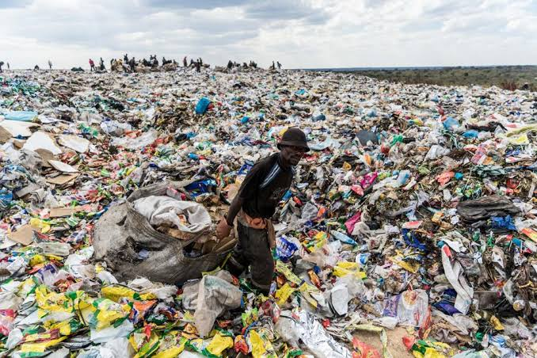

In Bangalore city, one of the major problems is municipal solid management (MSW) due to ever-increasing waste quantity along with its changing waste characteristics. Municipal solid waste includes non-hazardous waste generated in houses, institutions, commercial and business establishments in an urban area. As cities grow and produce more municipal solid waste and their waste collection systems become more efficient, the environmental impact from dumpsites becomes increasingly intolerable. Solid Waste Management is a very complex common problem in both developing and developed countries. Improper waste management can generally lead to transmission of illnesses, direct risks to those who contact with garbage, indirect risks of proliferation of animals that are carriers of microorganisms, aesthetic deterioration, degradation of the natural landscape, water, soil, and air pollution.
Consequences of improper waste management
Improper management in developing countries results in dirty public areas, waste recovery in the streets, dumping of garbage into streams and rivers, or open dumps leading to men, women, and children wading through the waste subjecting all of them to all kinds of diseases and accidents. The problem is aggravating due to rapid population growth, industrial development and changing eating habits, and widespread use of disposable containers. Bangalore’s waste is characterized by a high content of fermentable components (72%).
Breeding Ground of Pests
In India, open dumps are highly prevalent which causes the breeding of mosquitoes, flies, rats, cockroaches, and other pests. Some diseases are very common in the population living near the landfill site such as plague, histoplasmosis, murine typhus, malaria, dengue, West Nile fever, etc.
Odor Problem
The odor problem is the other problem that is linked to landfills. It becomes difficult for people to live near the landfill site due to the foul smell of waste decomposing in landfills. The problem is aggravated during the summer season in India when the average temperature exceeds the 45 °C mark.
Air Pollution
t has been observed that the waste received by landfills is burnt in open fields to reduce the amount of collected waste. This activity releases around 22,000 tonnes of pollutants every year into the atmosphere of Mumbai. The fine particles are also produced during the open burning of waste which causes smog and various respiratory diseases in humans.
Greenhouse Gases
Landfills have a layered structure of waste and soil. Each layer of waste that is added into the landfill is compacted which removes oxygen and excess moisture from it. This leads to the breakdown of products anaerobically which over time produces methane gas. The release of methane and other gases (mainly carbon dioxide) from landfills is also one of the major problems linked to landfills.
Statistics based on waste management
In the past, a significant component of the wastes placed in open street bins was rapidly sought by rag-pickers who removed the recyclables. The impact of this is presented in Figures 1a, 1b, and 2, which show that the percentage of organic waste will quickly increase in MSW from the primary collection point to the time it reaches the dumpsite due to multilevel recovery of recyclable wastes. This also changes the extent of decomposable C of the wastes and presents various forms of environmental implications (Chanakya and Sharatchandra, 2005). As the wastes gradually become enriched easily decomposable material, it also becomes easily amenable to anaerobic fermentation processes that convert the carbon to CO2 and CH4, the latter being a greenhouse gas of interest. From 1988 to 2000 there is a reasonable change in waste composition: fermentable, paper and plastic has increased by 7%, 3%, and 0.2%, respectively.